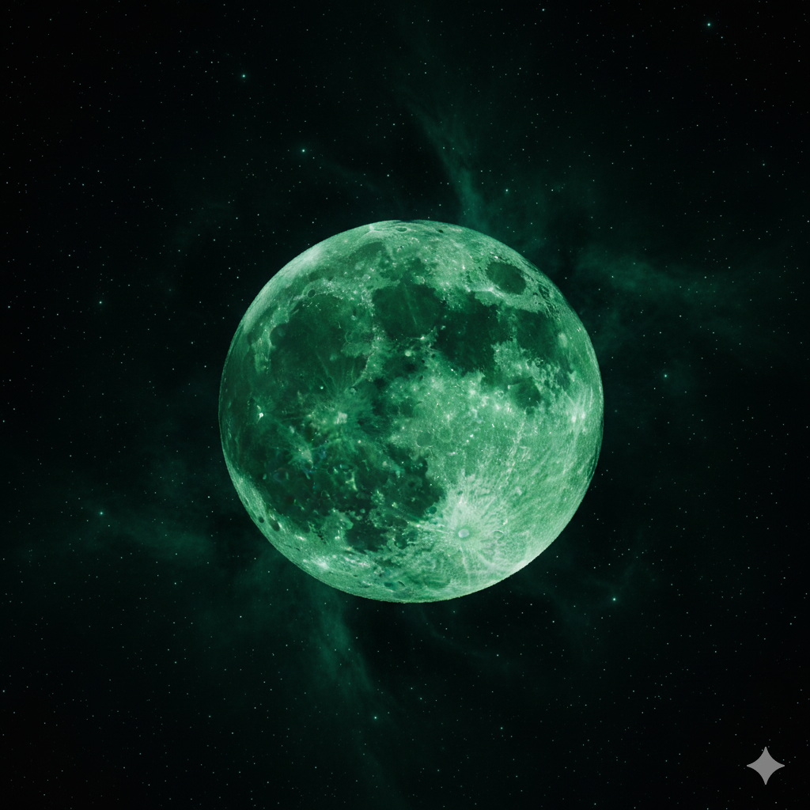

La Lune deviendrait verte en 2026 selon une fuite
Une « fuite » interne relayée par plusieurs blogs scientifiques affirme que la Lune pourrait changer de couleur et devenir verte dès 2026. Le phénomène serait lié à une modification de la composition chimique de la surface lunaire.
Selon un document attribué à la NASA, des analyses spectroscopiques récentes auraient détecté une « forte concentration de chrome et de cuivre », deux métaux qui pourraient altérer la teinte de la régolite lunaire. Aucune publication officielle n’a confirmé ces résultats.
Le Dr. Martin Keller, astrophysicien fictif de l’Université de Berlin, déclare : « Un changement global de couleur de la Lune est extrêmement improbable. Cela demanderait une modification de masse, que nous n’observons pas. »
Les images circulant en ligne semblent retouchées : saturation forcée, ajout de filtres colorés. Plusieurs astronomes amateurs soulignent que les clichés originaux ne montrent aucune anomalie.
Pourtant, sur les réseaux sociaux, l’hashtag #GreenMoon cumule déjà des millions de vues, entre fascination et peur d’une « prophétie cosmique ».